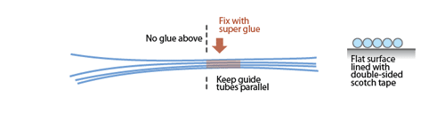
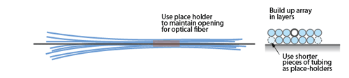
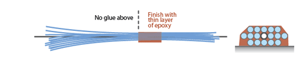
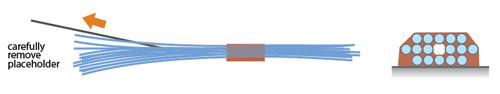
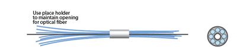
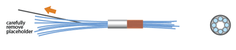

Building the guide tube array layer-by-layer:
By building the array of guide tubes with this layer-wise method, large and consistent elongated arrays can be built. For multi-site implants, it may be easier to modify the drive body design with multiple bottom openings and use multiple smaller guide tube arrays instead of one big one.
Cut 16 (or fewer) segments of 33ga polyimide tubes to around 6 cm length. This size of polyimide tube results in average electrode pitches of ~250 micron, though electrodes are free to move within its guide tube.

Glue the guide tubes into rows with superglue and arrange rows to form
linear arrays
Make sure that no glue gets into the tubes, and that the tubes are free from glue
above a consistent depth so they are free to fan out at that depth.

For guide tubes that are not supported by a layer of tubes from below add shorter lengths of tubing to prop them up.
To add a fiber to the array later, coat a piece of fiber or a steel cannula of the
same diameter with mineral oil, and arrange into array like a guide tube. This will function as a place holder. Make sure that the type and amount of oil works for ensuring that the cannula can later be removed - test this first to avoid destroying a guide tube array.
Alternative: If permitted by the spatial layout of the guide tube array, an additional polyimide tube can be used to house optical fibers instead of using a place holder that is removed after gluing. For 125micron fibers, an additional 33ga tube works well, for other diameters larger tubing has to be used.

After the polyimide tubes are arranged into the desired pattern, fix them with a
thin layer of epoxy.

After the epoxy has cured, carefully remove the placeholder for the fiber.
The guide tube array is now ready to be added to the drive body
Alternative: Building the array by arranging guide tubes in a cannula
For implants that don't require elongated electrode arrays, this method can be faster to build.
Cut 16(or fewer) segments of 33ga polyimide tubes to around 6 cm length
Cut a piece of large diameter polyimide tubing (we use 22ga) or steel cannula to the desired length (We use ~6mm for relatively medial cortical implants where the drive can be placed close to the skull - requirements will vary depending on the protocol). If using steel, make sure that there are no sharp edges left on the cannula after cutting.

Bundle the tubes into the larger polyimide tube or steel
cannula by adding more tubes one at a time and gently rearranging them.
To add a fiber to the array later, coat a piece of fiber or a steel cannula of the
same diameter with mineral oil, and arrange into array like a guide tube. This will function as a place holder. Make sure that the type and amount of oil works for ensuring that the cannula can later be removed - test this first to avoid destroying a guide tube array.
Alternative: If permitted by the spatial layout of the guide tube array, an additional polyimide tube can be used to house optical fibers instead of using a place holder that is removed after gluing. For 125micron fibers, an additional 33ga tube works well, for other diameters larger tubing has to be used.
Glue the guide tubes to each other and to the cannula using superglue. Make sure no glue is sucked up to the upper end of the cannulae by capilary action, otherwise the guide tubes won't be able to fan out in the drive body.
Stabilize the polyimide tubes with a thin layer of epoxy so they stay in place when cut later.

After the epoxy has cured, carefully remove the placeholder for the fiber.
The guide tube array is now ready to be added to the drive body